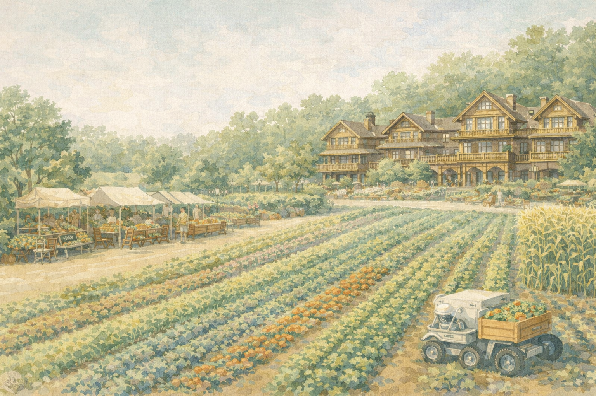

Solartopia is a "solarpunk community" dedicated to advancing self reliant community living and human flourishing for unemployed.
We host gatherings and experiments where people at the frontiers of renewable energy, robotics, sustainable technology, and ecological design come together to live and experiment.
Our driving belief is that breakthroughs happen when curious, kind, and high-agency people share space and momentum toward a regenerative future.
Each gathering brings together residents to live, learn, and build side by side. Shared meals, daily activities, and open-ended schedules create the perfect environment for collaboration and experimentation.
The temporary nature of these events creates freedom to experiment outside of the box, mixed with a shared sense of urgency and ambition to build and ship sustainable solutions. It's innovation at its most creative, sustainability at its most natural, and community at its most fun.
Everyone contributes. Solartopia is a place to build sustainable solutions.
Breakthroughs happen when fields intersect—energy, design, ecology, and technology.
Gatherings are designed for sustainability, regeneration, and harmony with nature.
Families, kids, and elders enrich the community with diverse perspectives.
Climate change is accelerating; society's response isn't.
The systems that shape our time—institutions, norms, governance structures—were made for a prior world. Ones that worked in the past are now rigid and slow-moving, unable to evolve to meet the opportunities and challenges of the current moment.
By creating "micro-exits," we create space to experiment with new systems, technologies, and practices. What works in these experimental environments can then be shared with society, shaping a better future for everyone.
We are building a 'network of communities': a global network of interconnected hubs that will run experiments and share learnings with people and ideas flowing freely. Some hubs will be temporary, while others will grow into permanent anchors for the communities.
These hubs leverage frontier sustainable tech—renewable energy systems, regenerative agriculture, circular economy principles, decentralized networks for governance, and emerging tools for resilience and self-sufficiency.
We are early in our journey, and we'd love to have you join us. Sign up to join a gathering in the timeline below.

Our proposed Solartopia location spans across Texas and surrounding regions, creating a network of sustainable communities throughout the south-central United States.
The map shows potential hubs and gathering points where we'll establish our solarpunk communities, focusing on areas with strong agricultural potential and community infrastructure.
Solartopia is a space for experimentation, where big ideas are tested and projects are accelerated. Below is a partial list of initiatives that were born, incubated, or iterated on at Solartopia.
Decentralized solar energy sharing network connecting communities for resilient power distribution.
Testing permaculture and regenerative farming techniques for food sovereignty and soil health.
Zero-waste systems and circular design principles for sustainable resource management.
Natural building materials and sustainable architecture experiments for low-impact living.
Solartopia offers diverse opportunities to earn a living while contributing to our sustainable community. From creative design to technical innovation, find your place in building a self-reliant future.
Design regenerative landscapes that integrate permaculture principles, native plants, and sustainable water systems. Create beautiful, functional spaces that support both human and ecological flourishing.
Learn more →Prepare nourishing meals using locally grown, seasonal ingredients from our regenerative farms. Lead community cooking workshops and develop recipes that celebrate sustainable, plant-forward cuisine.
Learn more →Design, build, and maintain autonomous farming systems that increase efficiency while respecting ecological principles. Work with cutting-edge agricultural technology to support food sovereignty.
Learn more →"Solartopia created an incredible space for experimentation and collaboration. The community's commitment to sustainability and innovation is inspiring."
"The multidisciplinary approach at Solartopia led to breakthroughs I couldn't have achieved anywhere else. It's a model for how communities should work."
"Being part of Solartopia shifted my perspective on what's possible when people come together with shared values and ambitious goals."